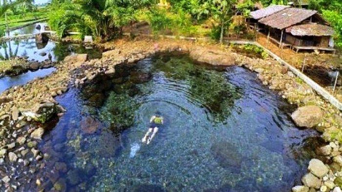
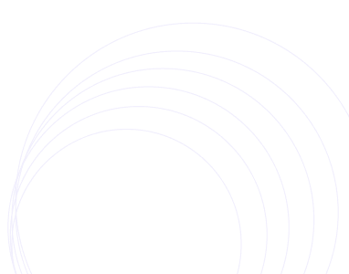

Ingin pergi ke pandeglang bagian mana hari ini?
Yuk, kunjungi tempat wisata terbaik di pandeglang.

Service
website referensi Tempat Wisata di pandeglang
taman
keindahan taman bunga dan taman nasional.
gunung
Petualangan menanti di tempat pegunungan bertemu langit.
pantai
pasir yang putih dan juga angin yang segar di sertai deburan ombak
pulau
pulau yang eksotik dan lautan yang biru

Tempat Wisata
Paling sering di kunjungi
Pantai Bugl Mega Camara
Lihat Detail
pandeglang, Kp.
Banyuasih
kampung domba
Lihat Detail
pandeglang, Kp.
juhut

pemandian citaman
Lihat Detail
pandeglang, Kp.
jiput
Tempat Wisata
Terpopuler
Gunung pulosari
Lihat Detail
pandeglang,
Kp. pasirpeurih
taman bunga
Lihat Detail
pandeglang,
Kp. jambu
pulau peucang
Lihat Detail
pandeglang,
Kec.sumur
pantai tanjung lesung
Lihat Detail
pandeglang, Kp.
Tanjung jaya
taman ujung kulaon
Lihat Detail
pandeglang, ujung
Kulon.
curug putri
Lihat Detail
pandeglang, Kp.
sukarame



Pembuat website
Platform online yang menyajikan informasi tempat wisata terbaik di pandeglang.
Support
Lainnya
© 2025 Muhammad nur fawwaz